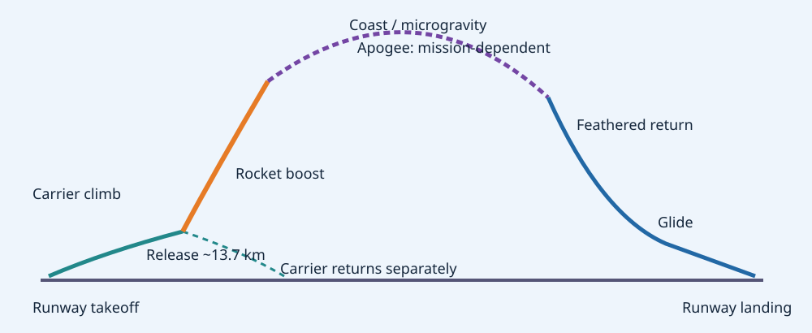
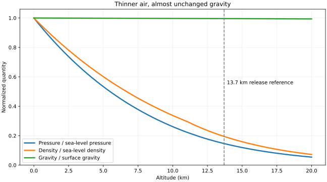
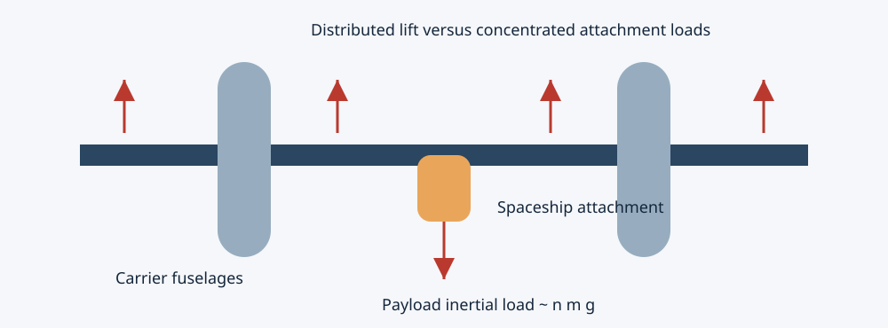
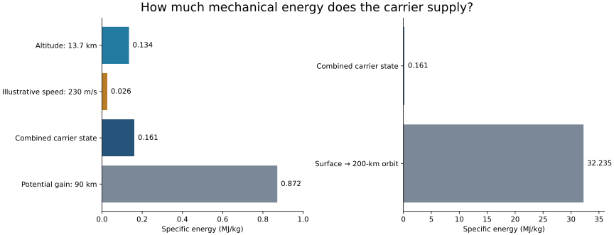

Air Launch to the Edge of Space
Apeiron, VMS Eve and the structural engineering of a reusable suborbital system
MIE 446 · Aerospace Structures · University of Massachusetts Amherst
Expanded second edition · Supplementary case study · Evidence cutoff: 1 November 2026
Reading guide. Sections 1–6 explain the flight; sections 7–8 and 13 develop the structures case; sections 12 and 14 test the performance and historical claims. Persian explanations appear at the beginning and in section 15.
خلاصهٔ فارسی: چرا ابتدا تا ۱۳٫۷ کیلومتر؟
هواپیمای حامل «ایو» فضاپیما را بین دو بدنه و زیر بخش میانی بال حمل میکند. صعود اولیه با موتورهای جت انجام میشود؛ پس از جدایی، فضاپیما موتور راکتی خود را روشن میکند و سپس با موتور خاموش به اوج مسیر میرسد. این پرواز زیرمداری است: رسیدن به ارتفاع زیاد با قرارگرفتن در مدار تفاوت دارد.
در ارتفاع ۱۳٫۷ کیلومتر، چگالی هوا حدود یکپنجم سطح دریا است؛ بنابراین شتابگیری راکتی در هوای رقیقتر آغاز میشود. جاذبه در این ارتفاع تنها حدود ۰٫۴ درصد کاهش یافته است. مزیت اصلی، کاهش پسا و انتقال صعود اولیه به یک هواپیمای قابلاستفادهٔ مجدد است، نه فرار از جاذبه. عدد ۱۳٫۷ کیلومتر نیز حد طبیعی فضا نیست؛ انتخاب عملیاتی سامانه است.
از دید سازههای هوایی، بار متمرکز اتصال فضاپیما، خمش و پیچش بال مرکزی حامل، تغییر ناگهانی بار هنگام جدایش، فشار کابین، اتصالات کامپوزیتی، خستگی و قفل سازوکار Feather اهمیت دارند. گزارش حادثهٔ ۲۰۱۴ نشان میدهد که ایمنی این سازوکار را نمیتوان فقط به اجرای صحیح دستورالعمل توسط خلبان واگذار کرد.
خبر ۲۸ اکتبر ۲۰۲۶ دربارهٔ آپایرون، انتقال آن در حالت متصل به حامل است. پرواز مستقل راکتی و ورود به خدمت تجاری در آن اطلاعیه هنوز مرحلههای آیندهاند. تاریخها، زمان سوزش و ارتفاعهای نسل قبلی نباید بدون آزمایش بهعنوان عملکرد قطعی آپایرون معرفی شوند.
1. The system and the question
Air launch divides the mission between two very different machines. A reusable jet aircraft performs runway takeoff and the initial climb using atmospheric oxygen. The smaller vehicle then separates and uses a rocket that carries its own oxidizer. After a short energetic ascent, the spaceship coasts, re-enters and glides to a runway. It does not dock with the carrier during return.
On 28 October 2026, Virgin Galactic announced that Apeiron, the lead next-generation spaceship, had been carried beneath Eve from Mesa, Arizona, to Spaceport America. Software integration, flight-test preparation and a subsequent test program remained ahead. The company forecast customer flights in early Q2 2027, subject to successful testing. This is a program forecast, not an accomplished commercial flight. [1] [14]

2. Historical lineage: useful precedent, different missions
| Milestone | What happened | Engineering relevance |
|---|---|---|
| 1947 · Bell X-1 | Chuck Yeager exceeded Mach 1 on 14 October; the rocket research aircraft was carried by a B-29. | Air launch preserved the limited rocket-powered flight time for the research objective. It was not a space-tourism mission. [7] [15] |
| 1959–1968 · X-15 | 199 flights by 12 pilots; B-52 release around 45,000 ft. | Research connected air launch, high-speed heating, control transitions and unpowered recovery. Similar release altitude does not imply similar structural design. [8] |
| 1990 · Pegasus | First mission on 5 April placed a satellite in orbit after release from a B-52. | Air launch can support an orbital mission when a suitable multistage rocket supplies the necessary energy. The carrier alone does not determine whether a mission is orbital. [9] |
| 2004 · SpaceShipOne | Reached the 100-km boundary on 21 June; flights on 29 September and 4 October secured the Ansari X Prize. | Demonstrated privately developed reusable suborbital flight with a dedicated White Knight carrier and feathered return. [10] [11] |
| 2014 · SpaceShipTwo accident | Enterprise broke up during a powered test on 31 October. | Premature feather unlocking exposed an aerodynamic overload hazard and deficiencies in protection against human error. [12] [13] |
| Unity heritage | Company documentation describes carrier release, rocket boost, coast, feathered return and glide landing. | A demonstrated architectural precedent; its published profile is not an exact Delta performance specification. [2] [3] |
| 2026 · Apeiron | Named and transported to its operations base on 28 October. | Captive carriage is one milestone; release, powered ascent, recovery and repeated service require their own evidence. [1] |
The history is therefore not a simple progression toward a single vehicle. X-1 targeted transonic research; X-15 explored high-speed/high-altitude flight; Pegasus delivered orbital payloads; SpaceShipOne and the Virgin Galactic architecture emphasize recoverable suborbital flight. Their useful common feature is an air-breathing carrier, but payload, speed, heat load and certification problems differ.
3. Carrier geometry and mission sequence
Eve has two fuselages, four turbofan engines and a roughly 140-ft (42.7-m) wingspan. The spaceship is suspended under the central wing. This provides ground clearance and a separation corridor, while concentrating significant attachment loads in the center structure. Published Eve/Unity dimensions belong to the heritage system; they should not be used to infer unreported Delta mass or attachment strength. [3]

The May 2024 user guide describes about 60 minutes of carrier climb to 45,000 ft, a short interval after release, approximately 60 seconds of rocket boost, an apogee of at least 80 km and about three minutes of microgravity. These are the guide’s approximate heritage values. The guide itself warns that actual performance varies. [2]
The release is not a vertical rocket launch from a motionless platform. The spaceship inherits the carrier’s forward speed. Its flight path and attitude subsequently change under thrust and aerodynamic forces. Powered ascent ends before the apogee: upward momentum continues to increase altitude while gravity reduces vertical velocity. Near apogee, vertical velocity passes through zero; horizontal velocity need not vanish.
4. Why release near 13.7 km?
There is no discontinuity in gravity or atmosphere at this altitude. The choice is an engineering compromise between carrier performance with payload, atmospheric density, separation conditions, rocket operation and operational constraints. A still higher release altitude is not free: jet thrust, available lift and aerodynamic margins change as density decreases.
Using NASA Glenn’s simple metric atmospheric fit in the lower stratosphere, with h in meters and p in kPa:
p = 22.65 exp(1.73 − 0.000157 h)
ρ = p / [0.2869 (T + 273.1)]
At 13,700 m this gives approximately p = 14.87 kPa and ρ = 0.239 kg/m³. Relative to the model’s sea-level state, pressure is about 14.7% and density about 19.5%. Actual atmospheric conditions vary. The pressure ratio also roughly measures the fraction of atmospheric column mass remaining overhead under hydrostatic assumptions. It is not a percentage reduction in mission fuel. [4]

At fixed speed, area and drag coefficient, D = ½ρV²CDS decreases with density. During an actual ascent V and CD change, so lower density does not guarantee that dynamic pressure decreases at every instant. Indeed q̄ = ½ρV² can rise while altitude rises. Structural design must use the entire trajectory, including its maximum dynamic pressure, rather than release density alone.
The carrier also performs the initial climb without consuming the spaceship’s rocket propellant. Its jet engines take oxygen from the atmosphere; the rocket carries oxidizer. However, the carrier consumes fuel and carries its own structural mass. Air launch is a system trade, not proof of minimum cost or maximum efficiency for every payload.
For Earth radius R = 6,371 km, g(h)/g₀ = [R/(R+h)]². At release this is about 0.9957. At 90 km it is still about 0.9723. Weightlessness follows from shared free fall, not from gravity disappearing.
5. Rocket propulsion and the coast to apogee
A rocket produces momentum thrust and a pressure contribution:
The symbols denote propellant mass flow, exhaust speed, nozzle-exit pressure, ambient pressure and exit area. Holding the nozzle operating state fixed, lower ambient pressure increases the pressure contribution. Actual nozzle performance additionally depends on expansion, combustion and separation behavior; this expression does not establish a particular motor’s altitude efficiency.
The heritage fact sheet identifies a hybrid motor with HTPB fuel and nitrous-oxide oxidizer. In a hybrid architecture, solid fuel and a separately supplied oxidizer react in the chamber. This explains operation without atmospheric oxygen, but it does not establish the exact hardware, mixture ratio or thrust history of Apeiron. [3]
For an idealized nonrotating, spherical Earth, a simplified planar flight model is:
V̇ = (F − D)/m − g sin γ
γ̇ = L/(mV) + [V/(R+h) − g/V] cos γ
ḣ = V sin γ
Here thrust is assumed aligned with velocity, lift acts in the trajectory plane, and γ is flight-path angle. Winds, Earth rotation, attitude dynamics, thrust-vector offsets and detailed aerodynamics are omitted. These equations show why trajectory and structure must be coupled: aerodynamic forces affect acceleration, while mass depletion changes load factors.
After cutoff, a constant-g, drag-free vertical estimate gives Δh ≈ vy,c²/(2g). For an illustrative—not measured—900 m/s vertical cutoff speed, the additional climb is approximately 41 km. This is why the rocket need not burn all the way to the highest point. A real reconstruction requires the actual cutoff state and trajectory integration.
6. Altitude, orbit and microgravity are different quantities
The FAA’s human-spaceflight recognition threshold is 50 statute miles, approximately 80.5 km; the FAI uses a 100-km Kármán boundary. Neither is a physical wall. A vehicle can cross 100 km and still remain suborbital. [5] [6]
A circular orbit requires primarily horizontal speed vorb = √[μ/(R+h)]. Using μ = 3.986004418×10¹⁴ m³/s² gives about 7.79 km/s at 200 km. Its kinetic energy per unit mass is approximately 30.3 MJ/kg, versus 0.50 MJ/kg for an illustrative speed of 1 km/s. This comparison explains the scale of the orbital challenge; it is not a launch-vehicle propellant calculation. Gravity losses, drag, staging and ascent geometry also matter.
In a coast segment, passengers and cabin undergo nearly the same gravitational acceleration. A freely floating passenger therefore experiences little contact force even while gravity remains strong. Residual accelerations from aerodynamic drag, attitude control and vehicle motion limit the quality of microgravity.
7. The central aerospace-structures problem: load paths

Attached climb. Distributed aerodynamic lift must balance the carrier’s and payload’s inertial loads. The spaceship load enters the carrier through fittings and local wing structure, then reaches spars, skins and the rest of the airframe. The central attachment is not equivalent to a uniformly distributed wing load. Gusts and maneuver accelerations generate asymmetric bending and torsion.
For a deliberately simplified beam of span ℓ, supported at its ends with a central force P, reactions are P/2 and maximum bending moment is Pℓ/4. An illustrative 10,000-kg payload, normal load factor 2 and 10-m support spacing give P ≈ 196 kN and Mmax ≈ 490 kN·m. These are invented teaching inputs, not Eve/Delta specifications. The real wing is not simply supported at two points: its distributed lift, fuselage inertia, continuity and attachment stiffness must be modeled.
The first two expressions describe elementary bending stress and beam shear flow. The third is Bredt’s relation for a thin-walled, single-cell closed section; local shear stress is qt/t. They are useful diagnostic estimates, not substitutes for a multicell composite-wing analysis. Attachment bearing, bypass load, peel, local buckling and delamination require additional joint-level models.
Separation. Releasing the payload changes local forces and moments rapidly. The carrier experiences an unloading transient while the spaceship enters an interference flow field. Relative pitch, downwash, clearance and engine-start timing require coupled aerodynamic and rigid-body assessment. A static attachment-strength calculation cannot establish safe separation.
Powered ascent. The motor mounting transmits thrust into the airframe. Axial compression, pressure-vessel loads, bending from off-axis forces, transonic buffet and vibration coexist. Passenger seat loads depend on proper acceleration, not simply the coordinate acceleration dV/dt. A scalar thrust-to-weight ratio does not capture the complete load envelope.
Pressurized cabin. For a thin cylindrical teaching model, σhoop = Δp r/t and σaxial = Δp r/(2t). Taking Δp = 60 kPa, r = 1 m and t = 3 mm gives 20 MPa and 10 MPa. Actual windows, frames, joints, laminate anisotropy and local curvature invalidate use of these nominal stresses as final design allowables.
Repeated service. A reusable vehicle accumulates attachment cycles, pressure cycles, thermal cycles and landing loads. Composites require attention to matrix cracking, impact damage, bonded joints, moisture/temperature effects and inspectability. Reusability is demonstrated by an inspection and maintenance system as well as by surviving one flight. No confidential Delta laminate, fatigue curve or certification margin is available in the sources used here.
8. Feathered re-entry: passive tendency is not unconditional safety
The feather configuration rotates the aft structure upward, increasing drag and changing aerodynamic moments. It helps establish a favorable return attitude and dissipate energy before the vehicle resumes its gliding configuration. The 2024 guide describes an approximately 60-degree rotation; it is a heritage value, not a newly verified Apeiron setting. [2]
A useful qualitative parameter is ballistic coefficient β = m/(CDA). Raising effective drag area lowers β, generally allowing stronger deceleration at lower atmospheric density for comparable conditions. This does not eliminate thermal design: heating depends strongly on velocity, density, geometry and trajectory, and a low peak temperature alone does not determine thermal stress or bond-line durability.
The NTSB found that the 2014 accident involved premature unlocking followed by uncommanded feather extension and aerodynamic overload. Its probable-cause finding emphasized failure to consider and protect against a single human error causing a catastrophic hazard. It is inaccurate to reduce the lesson to “the pilot pressed the wrong switch.” [12] [13]
For a structures course, the connection is direct: a mechanism changes the aerodynamic configuration, which changes the load envelope faster than the structure can accommodate. Hazard analysis must address lock state, actuator state, sensor disagreement, timing, human workload and failure containment. Numerical stress margins in the intended configuration cannot certify an unintended deployment configuration.
9. What remains unproved for Apeiron?
| Statement | Evidence class | Correct interpretation |
|---|---|---|
| Arrival at Spaceport America | Manufacturer event announcement | Reported captive ferry milestone; not an independent spaceflight. |
| Commercial start in early Q2 2027 | Company forecast | Conditional on testing and readiness. |
| Twice-weekly flights and life exceeding 500 missions | Design/operational targets in announcement | Not an achieved fleet reliability or maintenance record. |
| ~45,000-ft release and ~60-s boost | Published heritage mission guide | Architecture reference; exact Delta flight parameters require flight-specific evidence. |
| Numerical examples in this report | Analytical teaching calculations | Checkable equations, not Delta sizing or safety verification. |
The first three rows are attributed to the company rather than asserted as independent performance findings. [1] A useful future evidence set would include successful release and recovery tests, a measured powered-flight envelope, repeated inspection results, actual turnaround times and operational availability. This report makes no cost-per-flight, reliability or acceptance guarantee.
10. Worked classroom questions
- Atmosphere and drag. Use the supplied script to compare sea-level and 13.7-km density. Holding V, CD and S fixed gives a drag ratio near 0.195. Explain why an accelerating vehicle can nevertheless reach a later maximum in dynamic pressure.
- Carrier load. Double the support spacing in the hypothetical beam while holding P fixed. Mmax doubles. Explain why this does not establish that the actual twin-fuselage aircraft should halve its spacing: clearance, lift distribution, stability and structural continuity are omitted.
- Pressurization. Doubling thickness halves nominal membrane stress in the cylinder approximation. Explain why window-frame stress concentrations and laminate damage do not necessarily scale the same way.
- Coast. A 10% increase in vertical cutoff velocity raises the constant-g coast-height increment by 21%. State which real-flight effects prevent treating that result as an altitude guarantee.
- Design review. Identify one hazard that a static stress analysis misses in each of attached climb, separation, boost, feather deployment and landing.
11. Reproducibility and source discipline
Download the standard-library Python calculations. Rebuild the energy figure (optional Matplotlib dependency). They reproduce atmospheric properties, gravity ratios, orbital energy and the illustrative beam/cabin/coast examples. Figure 3 uses the same atmospheric equations. Figures 2 and 4 are original schematics; their geometry is not reverse-engineered flight hardware. The official photograph remains externally hosted with attribution and a source link.
The user-supplied Zoomit story motivated the report, but direct article retrieval was unavailable. Its unseen text is not treated as verified evidence. Sources below separate manufacturer documentation, public-agency technical material, museum history and accident investigation. Educational derivations are explicitly identified rather than attributed to an unpublished manufacturer model.
12. A quantitative engineering audit: what does the carrier actually buy?
The altitude benefit should be measured in energy as well as kilometers. For a unit mass lifted from Earth's surface to height h, the spherical-Earth potential-energy increment is Δeg = μ[1/R − 1/(R+h)]. At 13.7 km it is about 0.134 MJ/kg. An illustrative release speed of 230 m/s contributes another 0.0265 MJ/kg of kinetic energy. Their sum, approximately 0.161 MJ/kg, is real but modest beside orbital energy. The speed is an educational input, not a published Apeiron release measurement.
At h = 200 km: approximately 32.23 MJ/kg
The carrier's illustrative altitude-plus-speed contribution is thus only about 0.50% of the mechanical-energy increment from a nonrotating surface to this circular orbit. This does not imply only a 0.50% propulsion benefit: rocket mass ratios are nonlinear, nozzle operation changes, and the carrier replaces part of the trajectory and its losses. Nor can the ratio be interpreted as fuel saving. The calculation does establish why a carrier at 13.7 km is not “almost in orbit.” For a suborbital mission the altitude increment is much more relevant: the potential-energy increase from the surface to 90 km is approximately 0.871 MJ/kg. Release altitude supplies about 15.4% of that particular potential-energy increment, before accounting for remaining velocity or losses.

The ideal rocket equation makes the missing mass information explicit: Δv = Ispg₀ ln(m₀/mf). It assumes a specified effective exhaust velocity and omits external-force losses. To quantify the advantage of air launch, one would need comparable dry masses, propellant masses, propulsion maps and trajectories for both architectures. Crediting the carrier's horizontal speed as an equal reduction of required vertical speed would be incorrect. Direction, pull-up and gravity losses must be resolved.
NASA Armstrong's 2016 air-launch presentation identifies both the initial-state/nozzle advantages and the mass-and-drag cost of pull-up hardware. That analysis concerns launch architectures, including orbital ones; it is not an Apeiron design review. [17, slide 3] An aircraft carrier is useful when its reusable lifting and air-breathing propulsion outweigh the combined penalties of the aircraft, attachment, separation, flight envelope and operational coordination.
| Comparison | Air-launched rocket plane | Ground-launched rocket |
|---|---|---|
| Initial state | Receives altitude and forward velocity from a carrier. | Begins at the launch site; creates its own ascent velocity. |
| Initial propulsion | Carrier uses atmospheric oxygen; spaceship still carries rocket oxidizer. | Rocket carries its oxidizer from liftoff. |
| Integration | Requires attachment, carriage clearance and safe separation. | Requires pad/support integration and launch clearance. |
| Scaling constraint | Carrier payload, wing loads, ground clearance and climb performance. | Pad, vehicle structure, propulsion and staging constraints. |
| Operations | Two aircraft-related maintenance chains and a coupled launch window. | Launch infrastructure and vehicle operations; no carrier-aircraft dispatch. |
| What cannot be inferred | Neither architecture alone determines reliability, cost per passenger, emissions, or commercial viability. | |
Why not climb to 30 km before release?
In approximately steady level flight, lift equals weight: CL = W/(½ρV²S). At a fixed true airspeed, halving density doubles the required lift coefficient. Holding lift coefficient instead requires speed to grow as ρ−1/2. Compressibility, buffet, engine capability, payload and structural limits then intervene. During climb, available excess power must also supply the rate of potential-energy increase. A hypothetical infinitely high carrier ignores the machinery needed to get there. The optimum release altitude cannot be derived from atmospheric density alone.
Why thin air does not guarantee small loads
For q̄ = ½ρV², differentiating along a trajectory gives q̄̇/q̄ = ρ̇/ρ + 2V̇/V. In an exponential atmosphere of scale height H, a local maximum satisfies 2V̇/V = ḣ/H. This is a useful diagnostic identity, not a predicted Apeiron maximum-q altitude. Angle of attack, aerodynamic coefficients and lever arms are also necessary to turn q̄ into structural loads. NASA's dynamic-pressure discussion provides the underlying definition. [18]
At the illustrative 230 m/s, the calculated 13.7-km density gives q̄ ≈ 6.33 kPa, versus 32.4 kPa at sea level. At that same high-altitude density, 900 m/s would give approximately 96.9 kPa. The latter is a fixed-density thought experiment, not a physically reconstructed ascent: its purpose is to show how a squared speed increase can overwhelm the density advantage. Dynamic pressure is a force scale; it is not the local pressure everywhere on the vehicle.
13. From a load-path sketch to a defensible structural model
The most important distinction is between a free-body model, a stiffness model and a failure model. A free-body model enforces force and moment balance. A stiffness model determines how multiple load paths share those forces. A failure model compares local demands with allowable behavior, including instability and damage. Equilibrium alone cannot determine the load in every fitting of a redundant attachment.
Attachment and wing box
Let attachment reactions be Ri at locations ri. Their resultant and moment must balance the payload's aerodynamic and inertial loads. If the force acts a distance e from a wing-box shear center, an additional torsional moment Pe appears. Even a nominally vertical payload can therefore produce bending and torsion simultaneously. The simple Pℓ/4 example above supplies a sanity check, not the multi-attachment load distribution.
A useful analysis sequence is: whole-aircraft loads and trim; wing/fuselage beam or shell model; attachment submodel; local fastener/bond/contact model; then damage and inspection assessment. Mesh convergence must target quantities such as fitting force, joint slip and averaged bearing stress. A numerically growing peak at an ideal sharp corner is not automatically a meaningful material failure prediction. Joint flexibility can change load sharing enough that a locally detailed but globally incorrect model remains misleading.
Composite anisotropy and stability
In classical laminate theory, N and M are membrane and bending resultants, ε₀ is mid-plane strain, and κ is curvature. A, B and D describe extension, extension–bending coupling and bending stiffness. A symmetric laminate has B = 0 in this idealization, but geometric eccentricity and joint details can still couple loads. This is a general teaching relation, not a claim about the undisclosed carrier or Delta stacking sequence. Replacing a laminate by one scalar Young's modulus can conceal load-direction sensitivity.
Thin skins may lose stability before reaching a simple tensile allowable. For an ideal isotropic flat plate, the reference compression-buckling stress scales as kπ²E(t/b)²/[12(1−ν²)]. Boundary restraint enters k; laminate orthotropy, curvature, imperfections and stiffeners change the result. The scaling explains why increasing unsupported panel width is expensive in buckling resistance. It does not prescribe the thickness of any actual spaceship panel.
Separation as a transient and uncertainty problem
A reduced elastic model is Mη̈ + Cη̇ + Kη = f(t), with generalized deflection η. The force before release and its removal time determine the ensuing vibration. For an ideal undamped single oscillator initially at the static displacement P/K, instantaneous complete removal produces η(t) = (P/K)cos(ωt). This is not the familiar factor-of-two peak associated with suddenly applying a step load to an initially unloaded oscillator. Confusing the two cases can corrupt an attachment transient estimate.
The real separation problem also has relative six-degree-of-freedom motion and interference aerodynamics. Clearance must hold over uncertain release timing, mass properties, atmospheric disturbances and structural deflection. A single nominal animation is not sufficient. Useful verification quantities include minimum geometric separation, relative attitude/rates, contact-force history, local structural response and sensitivity to initial conditions. The report does not assert any actual release clearance or permitted timing.
Heat, fatigue and the evidence chain
Thermal strain is αTΔT. A restrained, homogeneous one-dimensional member can develop stress of order EαTΔT; a freely expanding member need not. In a laminate, different expansion coefficients and through-thickness temperature gradients can create interlaminar or bending demands even when mean temperature is moderate. Accordingly, peak temperature, thermal gradients, heating duration and material degradation are distinct design inputs.
FAA AC 20-107B discusses composite substantiation through materials, manufacturing, structural tests, damage tolerance, maintenance and environmental effects. It supports a building-block evidence chain rather than reliance on one analysis. It is cited here as civil-aircraft engineering guidance, not asserted to be the governing certification basis for Apeiron. [19, sections 6–9] A credible reuse claim would connect coupon allowables, representative joints and subcomponents, full-scale loading, nondestructive inspection capability and observed service damage.
| Question | Required evidence | Insufficient substitute |
|---|---|---|
| Will the attachment carry the envelope? | Correlated global/local loads, joint tests, uncertainty margins. | One static beam calculation. |
| Will separation remain clear? | Validated relative-motion model and envelope tests. | A nominal trajectory sketch. |
| Will the structure survive repeated service? | Representative cycles, damage tolerance and inspection records. | One successful flight or a target service life. |
| Is the feather mechanism adequately protected? | Configuration-dependent hazard analysis and verified protections. | Strength analysis only in the intended configuration. |
14. What the historical examples actually teach
The transferable X-15 lesson is multi-regime engineering. NASA describes an Inconel-X outer structure, a thermally isolated aluminum cabin, and aerodynamic controls supplemented by reaction controls in thin air. These choices addressed its own high-speed mission. They illustrate why one vehicle can require different structural and control strategies across a flight; they do not make X-15 material choices automatically suitable for a much slower passenger rocket plane. [8]
SpaceShipOne established feasibility, not fleet economics. Its prize flights belong in the historical chain because they demonstrated repeatable privately developed suborbital flight. Inferring a large passenger vehicle's lifetime, turnaround or maintenance burden directly from those flights would ignore scale, occupant systems, pressure cycles and operating rate. The historical achievement and the later commercial engineering problem deserve separate evaluation. [10] [11]
Pegasus prevents a common categorical mistake. Its orbital mission demonstrates that “air launched” does not mean “suborbital.” The second machine's propulsion, staging and trajectory determine whether orbit is obtained. Conversely, a vehicle crossing a conventional space boundary has not thereby gained satellite-like orbital endurance. [9]
The 2014 accident joins human factors to structural mechanics. The essential chain is unsafe mechanism state, changed aerodynamic configuration, and load beyond structural capability. A recommendation derived from that chain is to examine credible unintended configurations and protection failures alongside nominal stresses. This is an analytical lesson drawn from the investigation, not an assertion that the new vehicle has an identical mechanism or unresolved identical defect. [13]
Licensing is not airline-style passenger-safety certification
The FAA's human-spaceflight guidance states that it does not certify launch or re-entry vehicles as safe for carrying humans, and requires operators to communicate that fact to participants through informed consent. A launch authorization therefore should not be described as a government guarantee of passenger safety. Equally, the distinction is not proof that a particular vehicle is unsafe: that requires vehicle-specific evidence. [20]
۱۵. توضیح تکمیلی فارسی: از هواپیما تا لبهٔ فضا
آیا هواپیما بیشتر راه را میرود؟
از نظر ارتفاع، حامل بخشی از مسیر را طی میکند؛ اما «رسیدن به فضا» تنها بالا رفتن نیست. اگر هدف، یک پرواز کوتاه زیرمداری باشد، ارتفاع اولیه مفید است. اگر هدف قرارگرفتن در مدار باشد، مسئلهٔ اصلی کسب سرعت افقی بسیار زیاد است. محاسبهٔ این گزارش نشان میدهد انرژی ارتفاع ۱۳٫۷ کیلومتر بهاضافهٔ یک سرعت فرضی ۲۳۰ متر بر ثانیه، حدود نیم درصد انرژی مکانیکی لازم برای مدار دایرهای ۲۰۰ کیلومتری است. این نسبت، درصد صرفهجویی سوخت نیست؛ فقط بزرگی دو مسئله را مقایسه میکند.
پس چرا این روش را انتخاب میکنند؟
هواپیما صعود اولیه را با موتور جت و اکسیژن هوا انجام میدهد. فضاپیما در هوای رقیقتر جدا میشود، جایی که آغاز شتابگیری راکتی با پسای کمتری در یک سرعت معین همراه است. فشار محیط پایینتر نیز میتواند به عملکرد نازل کمک کند. در مقابل، باید هواپیمای حامل، اتصال بسیار مطمئن، جدایش ایمن و دو سامانهٔ نگهداری را داشت. بنابراین این روش برای بعضی مأموریتها مناسب است، ولی از روی همین ایده نمیتوان نتیجه گرفت که همیشه ارزانتر یا ایمنتر است.
فضاپیما بعد از جدایی چگونه مسیرش را عوض میکند؟
در لحظهٔ رهاشدن، فضاپیما سرعت رو به جلوی حامل را دارد. موتور راکتی و نیروهای آیرودینامیکی مسیر را به سمت صعود تغییر میدهند. زاویهٔ بدنه با زاویهٔ مسیر پرواز لزوماً یکسان نیست. هنگام خاموشی موتور هم سرعت رو به بالا هنوز صفر نشده است؛ درست مثل جسمی که رو به بالا پرتاب میشود، صعود ادامه پیدا میکند و جاذبه آن را کند میکند. در اوج، مؤلفهٔ عمودی سرعت صفر میشود، ولی سرعت افقی میتواند باقی بماند.
چرا مسافران شناور میشوند؟
در مرحلهٔ حرکت آزاد، کابین و مسافر تقریباً با هم سقوط آزاد میکنند. در نتیجه کف کابین دیگر مثل حالت عادی به بدن نیرو وارد نمیکند. جاذبه در ارتفاع ۹۰ کیلومتر هنوز حدود ۹۷ درصد مقدار سطح زمین است. پس تجربهٔ بیوزنی به معنی نبودن جاذبه نیست. همچنین صفرشدن سرعت عمودی در بالاترین نقطه به معنی صفرشدن شتاب گرانشی نیست.
بازگشت چه تفاوتی با ورود از مدار دارد؟
انرژی جنبشی با مربع سرعت افزایش مییابد. یک وسیلهٔ زیرمداری و یک فضاپیمای بازگشته از مدار حتی اگر هر دو از ارتفاع مشابهی عبور کنند، الزاماً انرژی، گرمایش و بارهای مشابه ندارند. سازوکار Feather سطح و وضعیت آیرودینامیکی را تغییر میدهد تا انرژی در جو دفع شود؛ سپس وسیله برای فرود گلایدری به وضعیت مناسب برمیگردد. این توضیح، جایگزین دادهٔ آزمایش، تحلیل حرارتی و بررسی خرابی قفلها نیست.
برای درس سازههای هوایی چه چیزی مهمتر است؟
مسیر بار را از فضاپیما تا اتصال، از اتصال تا بال میانی، و از بال تا سایر اجزای حامل دنبال کنید. سپس بپرسید هنگام آزادشدن این بار چه نوسانی ایجاد میشود؛ فشار کابین کجا تنش متمرکز میسازد؛ و تغییر شکل بال چگونه جدایش را تحت تأثیر قرار میدهد. یک سازه ممکن است از نظر تنش اسمی قابلقبول باشد، ولی در کمانش، اتصال، خستگی یا آسیب کامپوزیتی مشکل داشته باشد. به همین دلیل گزارش میان تعادل نیرو، سختی، مقاومت و شواهد آزمایش تفکیک کرده است.
نتیجهٔ قابل دفاع این نیست که آپایرون موفقیت تضمینشدهای خواهد داشت. نتیجه این است که معماری پرتاب هوایی سابقهٔ واقعی دارد، منطق فیزیکی آن قابل توضیح است، و ارزیابی نسل جدید باید بر دادههای مخصوص همان وسیله، پروازهای آزمایشی و سابقهٔ تکرار عملیات تکیه کند.
References
- Virgin Galactic: Apeiron arrival, 28 October 2026
- Virgin Galactic: Payload User’s Guide, May 2024 (legacy profile)
- Virgin Galactic: company fact sheet (Eve/Unity heritage)
- NASA Glenn: Earth atmosphere, metric model
- FAI: statement about the Kármán line
- FAA: commercial human spaceflight recognition
- NASA: First Generation X-1
- NASA: X-15 Hypersonic Research Program
- NASA NTRS: Pegasus first mission—flight results
- Smithsonian: SpaceShipOne
- Smithsonian: 2004 SpaceShipOne milestones
- NTSB: SpaceShipTwo accident investigation, DCA15MA019
- NTSB: full accident report AAR-15/02
- Virgin Galactic: Apeiron naming announcement
- NASA: X-1 and the sound barrier
- Reader-supplied Zoomit article (context; direct retrieval unavailable)
- NASA Armstrong, John Carter: Air Launch – Low-Cost Small Satellite Launch, September 2016; slide 3
- NASA Glenn: Dynamic Pressure
- FAA: AC 20-107B, Composite Aircraft Structure, 2009, Change 1 (2010)
- FAA: Human Space Flight — informed consent and vehicle licensing (accessed 1 November 2026)